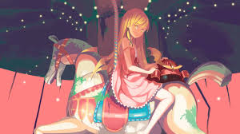
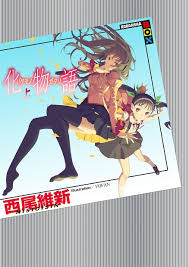
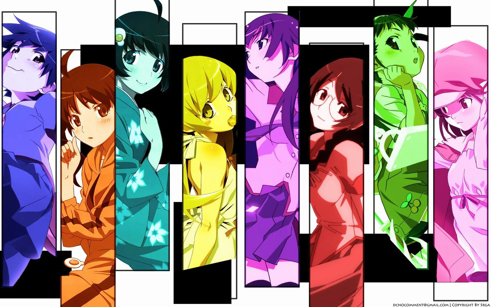
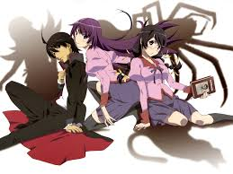
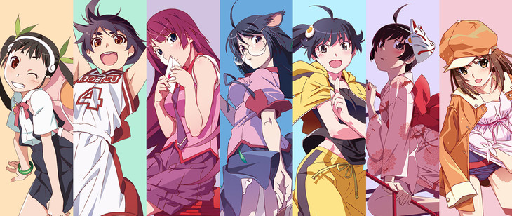
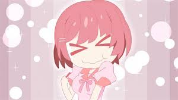
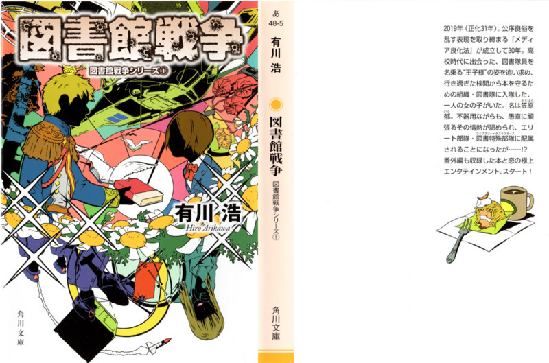

<!DOCTYPE html>
<html lang="ja">
    <head>
        <title>raikiのhomepage</title>
        <meta charset="utf-8">
        <link rel="stylesheet" href="mystyles.css">
    </head>
    <body>
        <div id="welcom">
           <p> Welcome to my homepage!!!</p>
        </div>
        <br>

        <nav>
            <h1 class="strong" id="index">オススメの本紹介ver小説</h1>
            <p></p>
               <ul>
                   <li><a href="">今週のオススメの小説(12/4~12/11)</a></li>
               </ul>
        </nav>
        <br>

        <div id="main">
            <header>
                <h2>みなさん読書はしますか！！？？</h2>
                <p>　といったところでこちらは小説の紹介コーナーとなります。初めての本の紹介ですが意気込んで行きましょう！！！</p>
            </header>

            
            <h1 id="book1_12/4">今週のオススメする小説はこちら！</h1>
            <p>　<span class="strong">「化物語」</span>をはじめとする<span class="strong">物語シリーズ</span>となります。<br></p>
            <p></p>
            <p>　閲覧してくれている人の中でも知っている人は割といるんじゃないでしょうか？（まずこのサイト閲覧してくれている人いるのかな。。。）<br></p>
            <p>　まあまあそんなことはおいといてしっかりと本の紹介をしていきたいと思います。

            <h2>概要</h2>
            <div>
                <div class="index_box">
                    <ul>
                        <li>タイトル</li>：＜物語シリーズ＞
                        <li>作者</li>：西尾維新
                        <li>イラスト</li>：VOFAN
                        <li>出版社</li>：講談社 
                        <li>巻数</li>：２１巻（めっちゃありますね）
                    </ul>
                </div>
                <div class="photo_box"></div>
            </div>

            <article>
                <h1>物語のあらすじ...</h1>  
                    <p>　人間不信だった男子高校生（主人公）がいろんなもの（女子高生とか、幼女とか、童女とか、少女とか、怪異とか、）と関わっていくにつれて人として成長する青春劇場です。</p>
                    <p></p>
            </article>
                <div class="coment">
                    <p>　ーん。。なんだか危ない本みたいな紹介になってしまいました。<br></p>
                    <p>　いろんな<span class="underline">もの</span>というかいろんな<span class="underline">ヒロイン</span>なんですけどねw</p>
                </div>
            <aside>
                <h1>もう少しちゃんと紹介</h1>
                <p>　私立直江津高校に通う阿良々木暦と出会っていくヒロインたちと、<span class="strong">「怪異」</span>を通して送る青春怪異小説です。<br></p>
                <p>　「怪異」というのは、お化けとか神様とか幽霊とか各地方に伝わる伝承が具現化して現れるものです。<br></p>
                <p>　バトル自体は極めて少なく、<span class"">「怪異についての謎を解いて、それによる事件の解決を図る。」</span>と、いうものになっています。<br></p>
                <p></p>
                <p>　基本のストーリーは<span class="strong">ギャグ</span>で構成されていますが、<span class="strong">シリアス</span>な場面も多々あり、メインである（メインなはずなんです）怪異の謎解きよりもギャグの会話が多いです。（というか多すぎますwそれでも面白いんで全然読めます）<br></p>
                <p>　こんな変な日常を描く本なのでもちろん主人公の個性も強いのですが、それを次々と越えていく個性の強さを各ヒロインが見せてくれます。その個性にも期待できるでしょう。<br></p>
                <p>↓個性豊かなヒロインズです</p>
                <p></p>
                <p>　<span class="underline">謎解きあり！笑いあり！（めちゃくちゃ多い）涙あり！</span>の素晴らしい本なので、ぜひぜひ、みなさんも読んでみてください！<br></p>
                <p>　なお、シリーズ物なので一気に買うというのは難しいと思いますが、意外と図書館に置いてありますのでお探しください。（茨城高専の図書館にはおいてあります。）</p>
            </aside>

            <section>
                <h1>余談</h1>
                <p>　余談となりますが、この物語シリーズは実は<span class="strong">アニメ化・映画化</span>もされています。<br></p>
                <p>　本はイメージしにくいかもなーとお思う方は、ぜひアニメをご覧ください！<br>
                 本の内容の一部がカットされていますのでもっと物語シリーズの深みにはまりたい！という人は、そこから本を手に取るのもいいでしょう。<br></p>
                <p></p>                  
                <br>
                <p>それではみなさんここまで読んでいただいてありがとうございました！！！</p>
                <p>少しでも興味を持っていただけたなら幸いです！</p>
                <p>（読んでくれる人がいることを願ってます。）</p>
            </section>
        
            <footer>
                <p>次週の更新は12/11日の予定で、紹介する本は<span class="strong">図書館戦争シリーズ</span>です！</p>
                <p></p>
            </footer>

    </body>
</html>